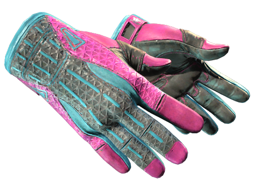

88dog 从零上手：注册到开箱的完整实战流程
一篇带你从下载到首次开箱的完整教程，覆盖注册绑定、仓库管理、交易市场和防踩坑要点，适合刚接触 CS2 开箱平台的新手。
这篇教程结束的时候，你应该能够独立完成一次 88dog 账号注册、绑定 Steam 交易链接、开出第一个箱子，并且知道自己拿到的饰品在哪里管理、怎么转给游戏用。
准备工作
开工之前先把三样东西备齐：
- 一台能上网的手机，安卓或 iOS 都行
- 一个能正常收短信的手机号（注册只靠验证码，不设密码）
- 一个已经开通社区市场的 Steam 账号（绑定交易链接要用）
App 安装包从88dog官网拿就好，需要的话走官方下载入口，别随便点微信群里转发的 APK——仿冒站这事后面专门讲。
第一步：手机号注册，一条短信搞定
打开 App，第一眼就是登录/注册页面。88dog 的注册逻辑很轻，没有用户名、没有密码，全程手机号 + 验证码：
- 输入你的 11 位手机号，仔细核对一遍，输错了验证码就发别人那儿去了
- 点「获取验证码」，正常 1 到 3 秒就收到了，超过 30 秒没到可以点「重新获取」，运营商偶尔会延迟，别急着连点
- 填 6 位验证码，勾上用户协议和隐私政策，点「登录/注册」
- 第一次用这个手机号登录，系统自动帮你完成注册，不需要额外填任何信息
注册完会引导你完善头像和昵称，这步跳过也不影响后续操作，但建议填上——后面在交易市场买卖东西，有头像昵称的账号看起来更可信一点。
第二步：绑定 Steam 交易链接，让饰品能到你账户
这一步是新手最容易卡壳的地方。88dog 开出的饰品要能准确发到你 Steam 库存里，必须绑定正确的交易链接。
打开 Steam 客户端，进入「库存 → 交易报价 → 谁能给我发送交易报价」，页面底部有一串以 https://steamcommunity.com/tradeoffer/new/?partner= 开头的 URL，整个复制下来，粘到 88dog App 里对应的输入框。
这里注意两点：一是交易链接必须完整，缺了 partner 参数就绑不上；二是 Steam 账号必须已经开通社区市场，否则交易链接无效。绑完之后 88dog 会做一次校验，通过了才能进入开箱环节。
第三步：领新手礼包，开第一箱
注册完成后去首页顶部横幅或者「我的」页面找新手礼包入口，手动点一下领取——礼包不会自动到账，这一点很多人忘了。礼包内容以 App 实际显示为准，一般有体验金或者限定次数的开箱券，有效期也各不同，领到了就赶紧用。
开箱的操作路径很短：首页选一个感兴趣的箱子，点进去看概率面板，确认预算没问题就点「开箱」。开完之后饰品直接进你的站内仓库，不用跳转到 Steam，这是 88dog 独立仓库系统的好处——所有资产流转都在 App 内闭环。

第四步：仓库里看你的饰品
仓库页面在底部导航栏里，点进去能看到：
- 顶部总览：饰品总数、按稀有度分布的统计、最近新增的物品、总资产估算价
- 每件饰品卡片：图片、名称、稀有度标签、磨损度、获得来源
- 快捷操作按钮：上架、提取、更多
想快速找到某件东西？用筛选和搜索。比如你想把传说级的刀都挑出来，设置稀有度「传说」+ 武器类型「刀」，几秒钟就过滤完了，不用一页一页翻。
仓库的另一层意义是安全——饰品存在 88dog 独立系统里，不必全堆在 Steam 账户里，降低了 Steam 被盗一锅端的风险。
第五步：要么提取要么上架
饰品到手之后两条路：转到 Steam 游戏里用，或者在站内交易市场卖掉换余额继续消费。
提取到 Steam：在仓库里找到要提取的饰品，点「提取」，系统会通过 Steam 交易报价把饰品发到你之前绑定的账户，到 Steam 客户端确认一下就完成了。
上架交易市场：点「上架」，系统会给一个基于历史成交数据的参考价区间，你可以在区间内自由定价，选择上架期限（一般 7 天或 30 天），提交审核通过后饰品就进市场列表了。88dog 的交易市场用的是担保交易模式——卖家上架后饰品进平台担保账户，买家付款后货款也暂存担保，双方确认无误后才分别结算，避免了跑路和诈单。更细的上架规则和费率说明去88dog文档能查到完整版本。

新手常见卡点
收不到验证码。先等 1 分钟再重试，运营商高峰期会有延迟；还不行就检查手机是不是开了短信拦截，或者换个网络再试。连续点「重新获取」反而会触发限流。
交易链接校验失败。大概率是链接没复制完整，或者 Steam 社区市场没开通。重新去 Steam 后台复制一遍完整 URL，确认账户状态正常再粘过来。
分不清官方和仿冒站。88dog 官方主域名是 88dog.com，浏览器地址栏必须以这个结尾，多一个字母（比如 88dogg.com）、改一个字符（比如 88dog.co）都是仿冒的惯用手段。拿不准的时候直接手动输入 88dog.com 从官网进，别点别人发来的短链。App 安装前核对包名 com.mds.dogshop 和开发者「成都霸霸朵哥网络科技有限公司」，仿冒 App 签名对不上的。
进阶一句话
等你跑通这整套流程之后，可以试着在交易市场里低买高卖赚差价——担保交易模式让站内买卖比外部平台省心很多，价格合适的时候入手、高价的时候出掉，也是一种玩法思路。